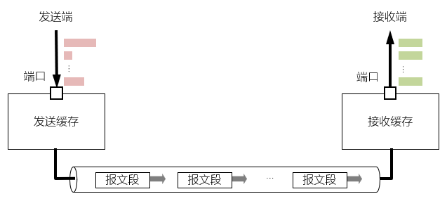
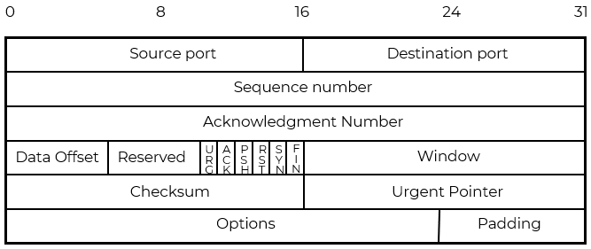
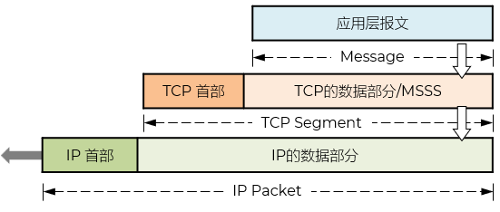
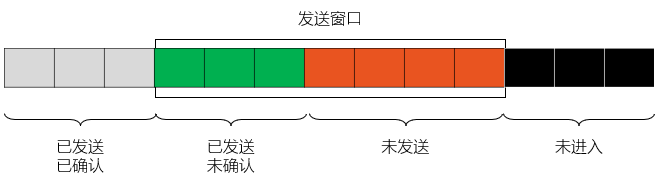
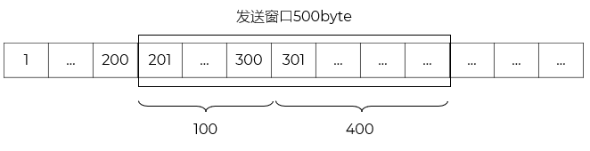
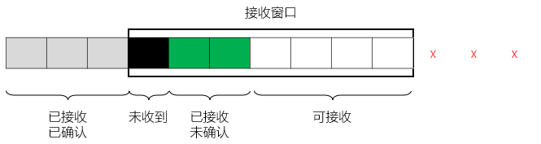
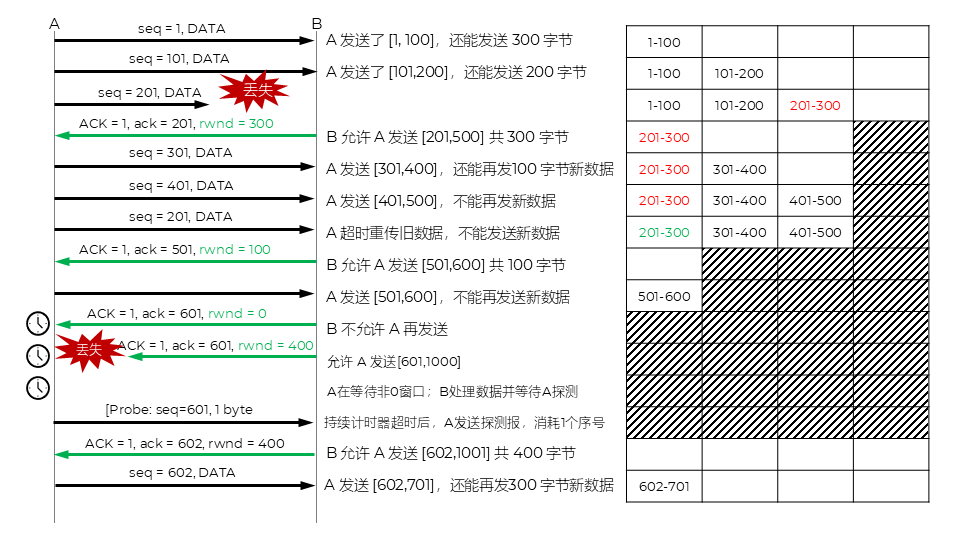
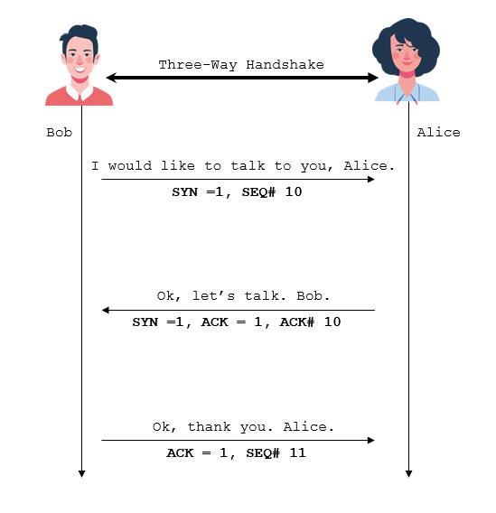
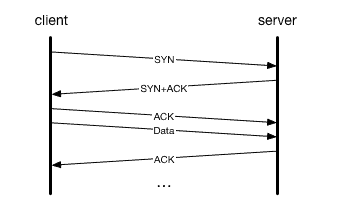

传输控制协议 TCP
2022-06-10- 概述 Overview
- TCP - Transmission Control Protocol
- 基于连接
- 点对点
- 全双工通信
- 可靠交付
- 面向字节流
- 应用 Application
- Web Browsing
- 文件传输 File Transfers
- 邮件交互 Email Exchange
- VPN 网络 VPN Connections
- 云服务 Cloud Services

报文 Packet
- 一个 TCP 报文段分为 首部 和 数据 两部分，而 TCP 的全部功能都体现在它首部中各字段的作用
- TCP 报文段首部的前 20 个字节是固定的，后面有 4n 字节是根据需要而增加的选项 (n 是整数)
- TCP 首部的最小长度是 20 字节
- TCP 报文段长度 = TCP 首部长度 + 数据字段长度
- 最大报文段长度 MSS - Maximum Segment Size：每个 TCP 报文段中的数据字段的最大长度
- 源端口 Source Port
- 2byte
- 目标端口 Destination Port
- 2byte
- 客户端在端口49155向目标主机80端口的应用[WEB]发起HTTP请求
- 服务端在80端口处理请求后，回发一个响应经过49155端口给客户端
- 序号 Sequence Number
- 4byte；32bit
- 当前报文段中 第一个数据字节 的序列号
- TCP 是面向字节流的协议，每一个字节 都有一个序号
包括链路建立成功的报文和后续0窗口的探测报文都会消耗序号
- 增加到最大值后，重新回到0 - 模加
- 第1个随机产生
- TCP 报文长度 MSS 为1000byte；现有5000byte数据；加上初始序号为1001
- 则：
第一个 TCP 报文：1001 - 2000
第二个 TCP 报文：2001 - 3000
第三个 TCP 报文：3001 - 4000
第四个 TCP 报文：4001 - 5000
第五个 TCP 报文：5001 - 6000
- 发送方要发送一个 1000 byte的数据流，初始序号为 100：
第一个 TCP 段携带 500 byte，则其序号为 100
第二个 TCP 段携带剩下的 500 byte，则其序号为 100 + 500 = 600
- 确认号 Acknowledgment Number
- 4byte；32bit
- 表示接收方期望收到的 下一个字节 的序号
- 表示序号n-1之前的数据已经收到，现在希望接收序号为n的数据
- 控制字段ACK为1时才有效
- 增加到最大值后，重新回到0
- 数据偏移 Data Offset
- 4bit，以4byte为单位
- TCP 报文 首部 的长度，从而确定数据部分从哪里开
- 如果采用固定长度，不使用选项和填充，则为5；5*4byte = 20byte
- 接收方知道从第几个字节开始是应用层数据，前面都是 TCP 头部
- 紧急位 URG
- 1bit 标志位 Control Bits
- 表示本报文段中包含紧急 Urgent 数据，接收方应优先处理这部分数据，而不是按正常队列顺序等待
- 配合紧急指针字段使用
- 较少使用
- 确认位 ACK
- 1bit 标志位 Control Bits
- Acknowledgment
- 本报文段包含一个有效的确认号，用于确认已成功接收到对方的数据
- 只有当 ACK = 1 时，确认号字段才有效。当 ACK = 0 时，确认号无效
- 除了最初的 SYN 报文（建立连接的第一个包），所有后续 TCP 报文都必须将 ACK 置为 1
- 是实现 可靠传输 的核心机制之一
- A发送序号为201开始的报文，长度是100
- 下一次发送时，A 的序号将变为 301
- 同时对B发送的序号800之前的报文进行确认，并希望收到B序号800开始的报文
- B发送序号为800开始的报文，长度是200
- 同时对A发送的序号300之前的报文进行确认，并希望收到A序号301开始的报文
-
这是一个典型的 全双工通信 场景：
A 向 B 发送 100 字节数据（序号 201~300），同时确认 B 的数据（确认号 800）
B 向 A 发送 200 字节数据（序号 800~999），同时确认 A 的数据（确认号 301）
- 如果 A 没有收到 B 的响应，启动超时重传机制，重新发送序号为 201 的报文。 直到收到对 301 的确认为止
- 立即位 PSH
- 1bit 标志位 Control Bits
- 推送 Push 操作
- TCP 默认会缓冲数据以提高效率，但某些应用（如交互式命令行）希望数据立即被处理
- 提示接收方不要缓存，应立即将本报文段中的数据交付给上层应用程序
- 实际效果：现代操作系统通常忽略 PSH 标志，或将其视为普通数据，但发送方可设置它来建议“尽快上送”
- 重置位 RST
- 1bit 标志位 Control Bits
- 重置连接 - 强制关闭连接或拒绝非法报文
- 常见错误场景：
收到不属于任何现有连接的报文（如端口未开放）
应用程序崩溃，TCP 发送 RST 终止连接
检测到严重错误（如序号严重错乱）
- RST 报文不需要确认，收到即断开
- 收到 RST 通常意味着连接异常终止（非正常四次挥手）
- 同步位 SYN
- 1bit 标志位 Control Bits
- 同步序号，用于建立连接
- 在三次握手过程中，SYN 用来协商初始序号
- SYN = 1 表示这是一个连接请求或连接接受报文
- SYN = 1，ACK = 0 时，表明这是一个连接请求报文段 - 连接未建立
- SYN = 1，ACK = 1 时，表明这是一个连接接受报文段 - 连接建立；ACK 必须为1
- SYN 报文本身不携带应用数据，但占用一个序号（seq 值 +1）
- 终止位 FIN
- 1bit 标志位 Control Bits
- 用来释放一个连接
- 发送方已完成数据发送，请求关闭连接
- 用于四次挥手 - 连接释放
- FIN = 1 表明此报文段的发送端的数据已发送完毕，并要求释放运输连接
表示“我不会再发数据了”，但还可以接收数据（半关闭状态）
- 对方收到 FIN 后需回复 ACK，并在自己也无数据发送时发送自己的 FIN
- 正常关闭连接必须通过 FIN，而 RST 是异常关闭
- 窗口 Window
- 16bit
- 指定数据发送方的发送能力，同时也表示了自己的接收能力
- 以字节为单位
- 最大窗口大小 216 = 26210 = 64 K(byte)
- 明确指出了现在允许对方发送的数据量
这种根据接收方的接收能力来控制发送方的发送能力 - 流量控制
- 窗口值经常在动态变化
- 紧急指针 Urgent Pointer
- 占 2byte
- 在 URG = 1时，指出本报文段中的紧急数据的字节数（紧急数据结束后就是普通数据），指出了紧急数据的末尾在报文段中的位置
- 选项 Options
- 长度可变，最长可达 40byte
- 填充 Padding
- 使整个 TCP 首部长度是 4byte的整数倍


日常使用中，确认号和控制位ACK的常见表示方法有2种
1. 使用ACK表示确认号，除非特别说明是控制位；如ACK = 101，表示希望收到101序号的字节数据；序号100之前的数据已经收讫；默认控制位为1
2. 使用大小写区分；ACK表示控制位；ack表示确认号，如下例
| 序号 | 201 |
| 数据长度 | 100 |
| 确认号 | 800 |
| 确认位 | 1 |
| 序号 | 800 |
| 数据长度 | 200 |
| 确认号 | 301 |
| 确认位 | 1 |
| ACK | 多 |
| SYN | 多 |
| FIN | 多 |
| RST | 异常时 |
| PSH | 偶尔 |
| URG | 很少 |
| 可靠性机制 | Sequence Number + Acknowledgment Number
Checksum |
| 流量控制 | Window |
| 连接管理 | SYN、ACK、FIN |
| 异常中断连接 | RST |
| 紧急数据处理 | URG + Urgent Pointer |
可靠传输 Reliable
- IP 网络本身提供的是不可靠的传输
- 可靠需求 Requirement
- 传输信道不产生差错
- 不管发送方以多快的速度发送数据，接收方总是来得及处理收到的数据
- 解决方案 Solution
- 可靠的本质是 确认 和 超时重传
- 序号 + 确认号：实现数据有序传输和重传机制的重要支撑
- 停止等待协议 ARQ
- Automatic Repeat Request
- 每发送完一个分组就停止发送，等待对方的确认。在收到确认后再发送下一个分组
- 情况1：无差错
A 发送完分组 M1 后就暂停发送，等待 B 的确认 (ACK)
B 收到 M1 向 A 发送 ACK
A 在收到了对 M1 的确认后，就再发送下一个分组 M2
- 情况2：超时重传
如果：B 没有收到M1或者收到的M1经过检测是错的，那么就丢掉，不发任何消息
所以：A 收不到 B 的回复/确认
A 为每一个已发送的分组设置一个超时计时器
A 只要在超时计时器到期之前收到了相应的确认，就撤销该超时计时器，继续发送下一个分组 M2 - 节流
A 在超时计时器规定时间内没有收到 B 的确认，就认为分组错误或丢失，就重发该分组
- 情况3：确认丢失
B 所发送的对 M1 的确认丢失了，那么 A 在设定的超时重传时间内将不会收到确认，因此 A 在超时计时器到期后重传 M1
假定 B 正确收到了 A 重传的分组 M1。这时 B 应采取两个行动：
1.丢弃这个重复的分组 M1，不向上层交付
2.向 A 发送确认 - 情况3：确认迟到
B 对分组 M1 的确认迟到了，因此 A 在超时计时器到期后重传 M1
B 会收到重复的 M1，丢弃重复的 M1，并重传确认分组
A 会收到重复的确认。对重复的确认的处理：丢弃
- 特点
- 暂存：在发送完一个分组后，发送方必须暂存已发送的分组的副本，以备重发
- 编号。对发送的每个分组和确认都进行编号
- 超时重传。发送方为发送的每个分组设置一个超时计时器。若超时计时器超时位收到确认，发送方会自动超时重传分组
- 超时计时器的重传时间应当比数据在分组传输的平均往返时间更长一些，防止不必要的重传
- 简单，但信道利用率太低
- 连续ARQ协议
- 流水线传输：在收到确认之前，发送方连续发出多个分组
- 由于信道上一直有数据不间断地传送，流水线传输可获得很高的信道利用率


滑动窗口 Window
- TCP支持全双工通信
- 通信的双方各自维护一个发送窗口和接收窗口，共4个窗口
- 简单起见，我们只考虑一个方向的通信
- 发送窗口
- 发送方维持一个发送窗口，位于发送窗口内的分组都可被连续发送出去，而不需要等待对方逐个确认
- 发送窗口滑动：发送方每收到一个确认，就把发送窗口向前滑动一个分组的位置；已确认的数据应移出窗口
- 累积确认 Cumulative Acknowledgment：接收方对按序到达的最后一个分组发送确认，表示：到这个分组为止的所有分组都已正确收到了
- 窗口大小以字节为单位
- 窗口大小由接收方B决定：通过 TCP 报文中的 Window 字段告知发送方A自己还能接收多少数据
- 假设发送窗口大小 = 4，当前可发送分组 [1, 2, 3, 4]
- 发送 1 - 4
- 收到 ACK=3，表示 1、2 已收到，等待接收 3
- 1、2移出窗口，后面的分组补进来并发出去，等待确认
- 其它没有收到确认的 3、4，保留，以备超时重传
- 窗口滑动到 [3, 4, 5, 6]
- 发送了300B，对方确认了200B
- 还有100B没有确认
- 确认过的数据报被移出缓存，窗口仅仅保留没有确认的数据报
- 窗口还有100B等待确认
- 窗口大小是500，所以还可以发送 500 - 100 = 400B
- 接收窗口
- 接收方维持一个接收窗口，告诉发送方自己还能接收多少数据，用于 流量控制
- 根据接收窗口的大小动态通知发送方
- 窗口左侧是已经已经按序到达且确认过的
- 窗口内部
已接收但尚未按序（乱序到达）的数据，被 TCP 缓存在接收缓冲区中，但不能被确认 - 累积确认，只能确认到连续的最高序号
尚未收到但预期会收到的数据 - 空闲
- 窗口右侧：不应接收；若收到通常丢弃



流量控制 Traffic Control
- Follow control
- 接收方在每个 ACK 报文中，通过 Window 告知发送方自己的接收窗口 rwnd 大小 - 控制发送方不要发太快，以便接收方能来得及处理
- 发送方根据该值动态调整自己的发送窗口大小，确保不会发送超过接收方处理能力的数据
- 发送方可以多次发送；直到把发送窗口已满
- 接收方采用累计确认
- 0窗口 Zero Window
- 当接收方缓冲区满时，会通告窗口大小为 0
ACK = 1; rwnd = 0
- 发送方停止发送数据
- 但若之后接收方有空间了，却因 ACK 丢失等原因未能及时通知发送方，双方可能陷入死锁 - 双方无限等待
- TCP 为每个连接都创建了一个持续计时器 persistence timer
- 只要发送方收到0窗口，就启动计时器。计时到，就主动发送一个窗口探测报文 Window Probe，以便恢复正常数据通信
- 接收方收到后必须回复 ACK，并携带当前真实窗口大小
ACK = 1; rwnd = 200
- 发送方收到后，恢复传输
- 若收到窗口仍为 0，则重启计时器，继续等待
ACK = 1; rwnd = 0
- A 向 B 发送数据，MSS = 100 字节
- 在连接建立时，B 告诉 A：我的接收窗口 rwnd = 400字节
- 右侧为A的发送方窗口

拥塞控制 Congestion Control
- 慢开始 slow start
- 拥塞避免 congestion avoidance
- 快重传 fast retransmit
- 快恢复 fast recovery
- 更多信息，请参考 拥塞控制
传输控制 Transmission Control
- 通信过程 Procedure
- 连接建立-三次握手
- 数据通信
- 连接释放-四次挥手
- 三次握手 Three-Way Handshake
- Joke Time
- A TCP packet walks into a bar and says to the bartender, “I'd like a beer.”
- The bartender says, “You'd like a beer?”
- The TCP packet says, “Yes, a beer.”
- 第一次握手：C发送请求，同步位置1；消耗一个序号x
- 第二次握手：S如果同意建立连接，则确认并回复同步响应报文；消耗一个序号y
- 第三次握手：B对S的响应报文进行确认；消耗一个序号x+1
- [ ] 三次握手过程中是否可以携带数据？为什么？
- 四次挥手 Four-Way Handshake
- 发送方没有数据要发送，发送释放连接FIN请求；接收方确认后，可以继续发送自己还未发送完的数据；当前连接是半连接状态：发送方到接收方的连接是关闭的
- 接收方发完数据了，也向发送方发送释放连接FIN请求；等链路上所有的数据报都达到目标主机后，连接被彻底释放




Summary & Homweork
- 主机A收到主机B发过来的TCP报文，序号为501，数据长度为200字节，则主机A给主机B的响应报文中，序号为（）。
- 已知发送窗口大小为500，某主机收到的确认号为201。如果已经发送了300个字节的数据，则还可以发送（）个字节的数据。
- Reading